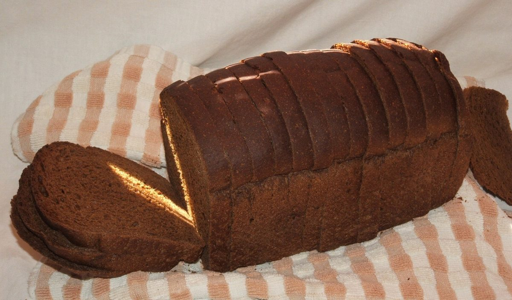

カフェ(パン屋系)/ 群馬県前橋市
パン
ジョグリ
群馬県前橋市文京町にある「パン ジョグリ」のご案内ページです。営業時間やメニューなど詳しいことは準備中。まずはInstagramをのぞいてみてください。


制作側の連想
「ジョグリ」から、三つのボールを思いついた
屋号の由来は分かりません。制作側は「ジョグリ」という響きから、ジャグリングを連想しました。三つのボールが弧を描いて、手から手へ渡っていく。そのイメージで、写真を丸く切り抜いて、ボールのように宙に並べています。制作側の連想で、お店の理念・由来とは無関係です。
宙に浮かぶ丸い写真(イメージ)
カスケードの4球
写真はお店のものではありません。国外または撮影地不明のフリー素材です。提供している品を示すものでもありません。



ご案内
お店のこと(確認できたものだけ)
| 所在地 | 〒371-0801 群馬県前橋市文京町３丁目３４−１ |
|---|---|
| 電話 | なし |
| 営業時間 | 準備中 |
| 定休日 | 準備中 |
| ご予約 | 準備中 |
| 駐車場 | 準備中 |
| SNS | Instagram @pkpjgr2024 |